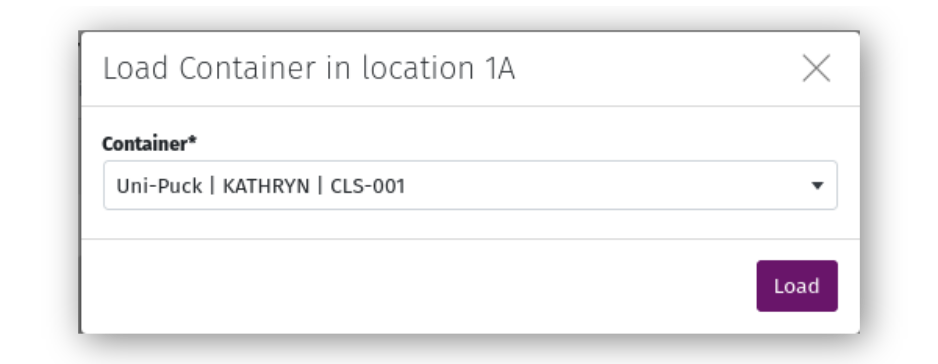
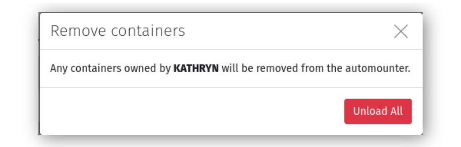

Beamlines and Automounters¶
New beamlines can be created through the Django administration site. The beamline acronym is used for email notifications about upcoming beamtime, for tagging publications, and display and filters throughout MxLIVE. The Name, energy range, and Contact phone are for display purposes only. If a beamline is marked as Simulated, it will not appear on the weekly schedule.
Each beamline can be assigned an automounter layout for loading containers. Default autmounters included in MxLIVE are SAM, CATS, and ISARA, but additional automounter layouts can be defined as a new Container Type through the MxLIVE Django administration site.
To associate an automounter with a beamline, create a new Dewar through the Django administration site. Choose the Beamline and Container, or create the container using the “+” button. The container should have the Status on-site, and be assigned to a Project marked as staff. While a beamline can have multiple Dewars, only one should be marked as Active at any given time.
Use the “History” icon in the toolbar to see a detailed history of container locations loaded in the automounter.
Loading an Automounter¶
To load a container in an automounter, select the location where the container will be loaded and choose from the list of containers that are currently on-site and NOT loaded in an automounter.
To move a container to a different location in the same automounter, select the container from the layout and choose its new location.
To unload a container, either select it from the layout and choose “Unload”, or use the “Unload” icon next to the container in the right-hand sidebar. Loaded containers can be viewed either listed individually, or sorted by project.
You can also use the “Unload all” icon in the Projects tab to unload all containers belonging to a specific user.
Beamline Statistics¶
The toolbar has icons to access beamline statistics and usage metrics. Statistics include data collection parameters that indicate how the beamline is typically used. Usage metrics include many bulk statistics of how beamtime is used, including by access type and project type.